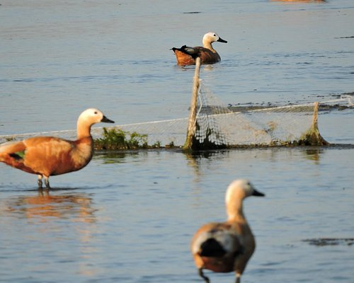

Significance: It is a National Park as well as a Biosphere Reserve having an area of 340 sq. kms. in Tinsukia district. It is the largest swamp forest in north-rastern India. A unique habitat endemic to Dibru-Saikhowa only, a habitat which has undergone radical transformation after the great earthquake of 1950. The migratory birds are a major attraction.
Fauna: The forest type of Dibru-Saikhowa comprises ser evergreen forests, deciduous forests, littoral and swamp forests and patches of wet evergreen forests.
Mammals: 36 species of mammals have so far been recorded - Tiger, Elephant, Leopard, Jungle Cat, Bears, Small Indian Civet, Squirrels, Gangetic Dolphin, Slow Loris, Assamese Macaque, Rhesus Macaque, Capped Langur, Hoolock Gibbon, Wild Pigs, Sambar, Barking Deer, Water Buffalo, Feral Horses etc.
Birds: It is an identified Important Bird Area (IBA) having more than 382 species of Birds, some of which are Greater Adjutant Stork, Lesser Adjutant Stork, Greater Crested Grebe, Large Cormorant, Open bill Stork, Black necked Stork, Large Whistling Teal, Grey leg Goose, Grey-headed Fishing Eagle, Griffon Vulture, Osprey, Crested Serpent Eagle, Spot Billed Pelican, White Winged Wood Duck, Baer's Pochard, Greater Spotted Eagle, Pale Capped Pigeon, Great Pied Hornbill, Marsh Babbler, Jerdon's Babbler, Black Breasted Parrot bill, etc. The park is renowned for natural regeneration of Salix trees.
How to reach: The Park can be visited by staying at Tinsukia town. Mohanbari (Dibrugarh) Airport is the nearest Airport, which is about 40 kms. away from Tinsukia. The distance between Guwahati and Tinsukia is 500 kms. Tinsukia is well connected with Dibrugarh town by NH. 37 and the distance is 55 kms. Dholla is the nearest township of Saikhowaghat entry point.
Where to stay: Hotel Highway, A.T. Road, Tinsukia, Tel.: (0374)2335383/2332783/2340820, Hotel Jyoti, Rangagora Road, Tinsukia, Tel.: (0374)2333243, Hotel Urmila Continental, Rangagora Road, Tinsukia, Tel.: (0374)2333777/2333773, Hotel Indralok, Prakash Bazar, Tinsukia, Tel.: (0374)2340398, Hotel President, Station Road, Tinsukia, Tel.: (0374)2340435 and Banashree Eco-Camp, Guijan , Tel.: (0374)2237666
Whom to contact for visit: Divisional Forest Officer, Tinsukia Wildlife Division, Tinsukia, Pin: 786126, Tel.: (0374)2331472(O), Range Forest Officer, Guijan Wildlife Range, P.O. Guijan, Range Forest Officer, Saikhowa Wildlife Range, Na-bormurah, P.O. Dholla.
Best season for visit: November to April.
